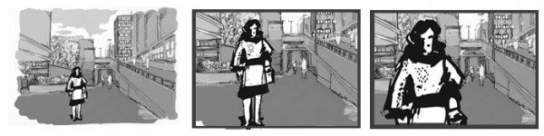
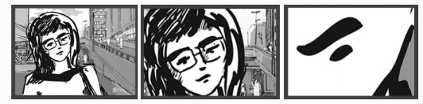
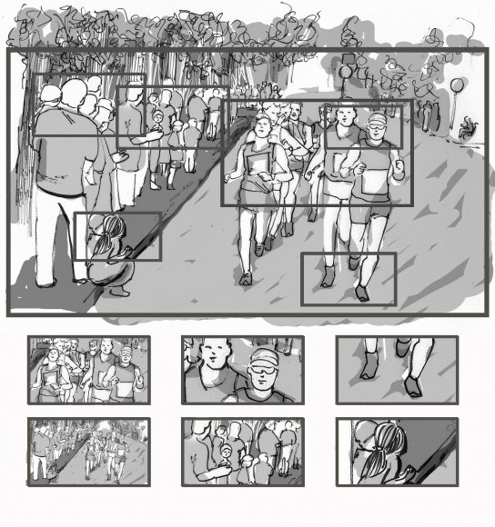
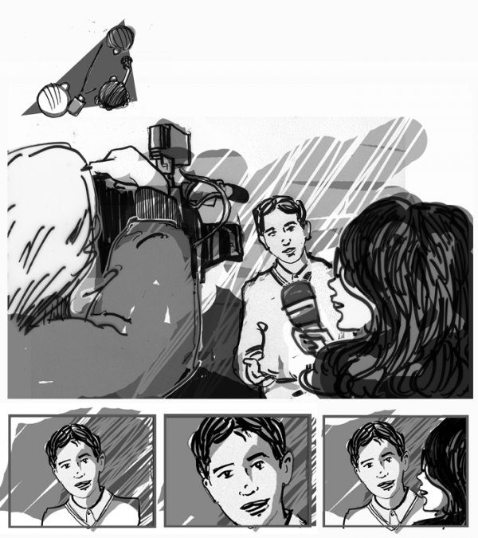
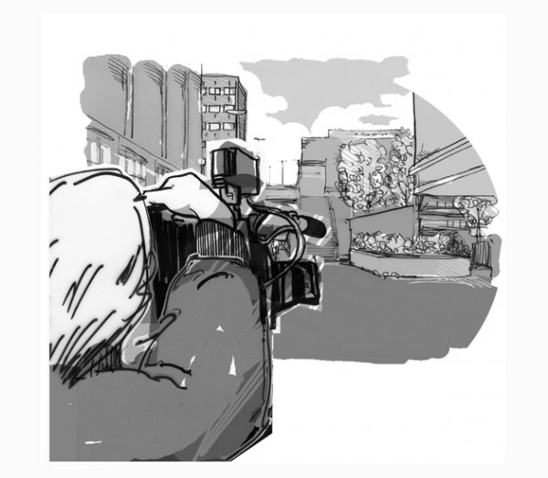

Kuvauksissa pätee muutama hyödyllinen sääntö. Ensinnäkin kannattaa varata kuvauksiin riittävästi aikaa ja suunnitella kuvausjärjestys etukäteen. Toiseksi haastattelut on hyvä kuvata ensimmäisenä, sillä niiden pohjalta on helpompi kuvata kuvitusta, tehdä juonnot ja voice over speakit. Kolmantena kannattaa muistaa, että kuvituskuviin ja havaintokuviin kannattaa panostaa, koska hyviä kuvia ei koskaan ole liikaa.
Sananvapauden perusteella Suomessa saa kuvata julkisissa paikoissa ja yleisölle avoimissa tiloissa ilman erillistä lupaa. Esimerkiksi kaupoissa, kauppakeskuksissa ja asemilla (paitsi lentoasemalla) saa kuvata, mutta käytännössä ainakin kaupoissa kannattaa sopia kuvauksista etukäteen epäselvyyksien välttämiseksi. Mitään perusteita kuvausluvan eväämiseksi ei näissä paikoissa ole. Sitä vastoin kodeissa ja asuinrakennuksissa, rappukäytävissä, talojen pihoissa, virastoissa ja muissa yksityisissä ja yleisöltä suljetuissa tiloissa pitää lupa aina kysyä etukäteen. Alle 16-vuotiaita saa kuvata vain vanhempien luvalla.
Kun teet haastattelua tai katugallupia kysy aina lupa haastatteluun, kerro mihin ja miten sitä käytetään sekä milloin ja millä kanavalla/verkkosivulla ohjelma esitetään. Muista, että kuvauslupa ei tarkoita julkaisulupaa eli tarvitset suostumuksen molempiin.
Jos käytät esim yleiskuvaa kadulta kuvituksena, mieti ovatko ihmiset tunnistettavia ja mitä aihetta ohjelma, johon kuvaa käytetään käsittelee. Tekijän tulee välttää väärien assosiaatioiden luomista kadulla kulkeviin satunnaisiin ihmisiin.
Muista ladata akku, tyhjentää muistikortti tai varata tarpeeksi nauhaa, jos kuvaat nauhakameralla. Kameran lisäksi tarvitset useimmissa tapauksissa jalustan, mikrofonin ja piuhan sekä kuulokkeet. Testaa laitteet AINA ennen kuvausta ja varmista, että osaat säätää kameran oikein kuvaustilanteessa. Lue kameran käyttöohjeita, se kannattaa!
Tarkista onko paikassa tarpeeksi valoa ja mistä valo tulee. Suoraan vastavaloon on vaikea kuvata. Sisätiloissa lisävalo on yleensä aina hyväksi. Esimerkiksi katossa olevat loisteputket eivät yleensä ole riittäviä valonlähteitä.
Mieti, millaisia erilaisia kuvia paikassa saa ja mitä esimerkiksi haastateltavan taustalla näkyy. Kuuntele myös millainen äänimaisema paikassa on. Jos teet haastattelun, tarkista ettei tilassa ole kovaa huminaa (esim jääkaappi), meteliä (liikenne) tai taustamusiikkia, sillä puhe hukkuu helposti.
Kuvatessa jätä ylimääräistä häntää alkuun ja loppuun, eli paina rec-nappia ajoissa (esim reilusti ennen kuin haastateltava aloittaa) ja jätä otoksen loppuun hieman löysää. Tämä helpottaa leikkaamista. Haastattelutilanteessa kuvaaja sanoo, koska kamera käy ja antaa luvan haastattelijalle aloittaa.
Voit zoomata kameralla tai liikuttaa sitä kävelemällä itse lähemmäksi tai kauemmaksi kuvauskohteesta. Voit panoroida eli liikuttaa kameraa sivusuunnassa sekä tiltata, eli liikuttaa kameraa alas-ylös-suunnassa. Älä kuitenkaan zoomaa voimakkaasti/nopeasti tai liikuta kameraa äkkinäisesti ainakaan silloni kun kuvassa oleva henkilö puhuu tai tekee jotain tärkeää. Kameran liikkeitä kannattaa harjoitella etukäteen. Jalusta auttaa saamaan kameran liikkeistä tasaisempia, mutta ei ole misään nimessä välttämätön.
Pidä mikrofonia lähellä puhujan suuta. Äänen tasojen (näkyvät usein kameran näytössä) on oltava mahdollisimman lähellä 0 db, jotta ääni kuuluu hyvin. Huomaa, että äänen tasot eivät ole sama asia kuin äänen voimakkuus. Varmin tapa onnistua on laittaa kameraan automaattiasetukset, pitää mikrofonia lähellä puhujaa/äänilähdettä sekä valita hiljainen äänityspaikka. Kuuntele AINA kuulokkeilla, miltä ääni kuulostaa kun kuvaat. Jos ääni särkyy, kuulostaa metalliselta, taustalla kuuluu kännykän häiriöääni tms. keskeytä kuvaukset, tarkista kalusto ja sammuta kannykät.
HUOM! Äänen tasolla tarkoitetaan sitä voimakkuutta, jolla ääni tallentuu kameraan tai nauhuriin. Äänen tasot voivat olla kohdallaan, vaikka ääni kuuluisi kuulokkeista hyvin heikosti, sillä kuulokkeiden äänenvoimakkuutta voi säätää ilman, että se vaikuttaa äänitystasoihin. Sama pätee toisin päin.
Jos äänen tasot ovat äänitystilanteessa alhaiset, niitä on vaikea muokata leikkausvaiheessa, sillä kun äänen tasoa joutuu nostamaan leikkausohjelmassa rajusti, syntyy ääneen voimakas kohina. Toisaalta, jos äänitys on tehty liian korkeilla tasoilla, ääni menee niin sanotusti rikki, eikä sitä voi leikkausohjelmassa korjata. Äänen tasoja on tärkeä tarkkailla niin kuvatessa kuin leikatessa, sillä valmista ohjelmaa tulisi voida katsella tietokoneelta tai televisioista normaaleilla volyymisäädöillä.
Erilaisia kuvakokoja

yleiskuva (YK) kokokuva (KK) puolikuva (PK)

puolilähikuva (PLK) lähikuva (LK) erikoislähikuva (ELK)
Kuvakerronta koostuu kaikista erilaista kuvista, joita olet ohjelmaasi varten kuvannut. Jotta kerronta olisi mielenkiintoista ja vaihtelevaa kannattaa kuvata erilaisia kuvia. Käytännössä tämä tarkoittaa kuvakokojen ja -kulmien vaihtelua sekä erilaisten rajausten ja kompositioiden tekemistä. Ylhäällä näkyy esimerkkejä erilaisista kuvakoista.
Kamera on hyvä väline havainnointiin. Kuvatessa kannattaa siis poimia varsinaisen kuvauskohteen (esim. haastateltava henkilö) lisäksi erilaisia havaintokuvia kuvauspaikasta. Havaintokuvilla voit näyttää ja kertoa katsojille lisää ohjelman aiheesta, sekä rytmittää esimerkiksi haastattelua.
Ota havaintokuvia eri kuvakulmista ja eri kuvakoissa. Laajat esittelykuvat, joissa kuvauspaikka, esimerkiksi tori, näkyy kokonaisuudessaan, auttavat katsojaa paikantamaan ohjelman tapahtumat ja hahmottamaan tapahtumien puitteet. Laajojen kuvien lisäksi erilaiset yksityiskohdat ovat kiinnostavia. Erilaiset kuvakulmat, esimerkiksi ala- tai yläkulma, rikastuttavat kuvakerrontaa. Hyödynnä lisäksi kuvan etu- ja taka-alaa, sillä näin kuvaan tulee syvyyttä. Kuvan etualalla voi esimerkiksi olla puun oksia, jotka eivät tarkennu täysin, ja kuvan taka-alalla näkyy varsinainen kuvauskohde tarkkana.

Muista poimia erilaisia yksityiskohtia ja laajempia yleiskuvia eri kuvakulmista kuvatessasi.
Ihmistä kuvatessa käytetään yleisesti edellä esiteltyjä kuvakokoja. Varsinkin pidemmissä haastatteluissa hyödynnä eri kuvakokoja, sillä ne helpottavat leikkaamista ja elävöittää ohjelmaa. Muuta kuvakokoa kuvaustilanteessa haastattelijan kysymyksen aikana, jolloin haastateltavan puhuessa kamera ei turhaan heilu tai zoomaa.

Haastattelutilanteessa kuvaaja, haastattelija ja haastateltava voivat asettua esimerkiksi kolmiomuodostelmaan. Kuvaaja saa pienillä paikan vaihdoksilla tai kameran zoomilla helposti erilaisia kuvia.
Haastattelutilanteessa kuvaaja voi sijoittua muutamalla eri tavalla. Nyrkkisääntö on, että kameran tulisi olla suurin piirtein samalla tasolla kuin kuvattavan silmät. Tällöin kuva näyttää luonnolliselta ja kuvattavan henkilön kasvot näkyvät. Reilusta ylä- tai alakulmasta kuvattu haastattelu voi toimia tehokeinona, mutta pidemmän päälle se usein häiritsee katsojaa.
Usein luonnollinen tapa kuvata haastattelua on sijoittaa haastattelija kameran viereen ja pyytää haastateltavaa katsomaan haastattelijaa silmiin. Näin haastateltava näkyy hyvin mutta hän ei puhu suoraan kameralle, vaan aavistuksen verran linssin ohi. Suoraan kameraan katsominen on voimakas tehokeino, joka toimii esimerkiksi juonnoissa tai suoraan katsojia puhuteltaessa.
Kuvakokojen lisäksi on tärkeää kiinnittää huomiota kompositioon. Kompositio tarkoittaa kuvauskohteen sijoittamista kuvaruutuun. Sijoita haastateltava kuvaan niin, että hänen katseelleen ja puheelleen jää tilaa. Joissakin tilanteissa voit mahduttaa myös haastattelijan kuvaan esimerkiksi niin, että kuvaat haastattelijan olan yli. Tämä ns. twoshot tuo elävyyttä haastatteluun.
Kannattaa myös katsoa, että kuvattavan henkilön pään päälle jää sopivasti tilaa ja ettei kuva katkaise henkilöä esimerkiksi kaulasta. Mitä tiukemmin kuva on rajattu haastateltavaan, sitä vähemmän kuvaan mahtuu taustaa ja päinvastoin. Tavoitteena on joka tapauksessa löytää kuvakoko ja kompositio, jossa haastateltava näyttää luontevalta ja hänellä on tilaa sanoa sanottavansa.
Jos kuvaat useita haastatteluja samaa ohjelmaa varten saat kuvakerronnasta elävämpää jos sommittelet puhujat kuvan eri laitoihin, toisen oikeaan laitaan niin että katseen suunta on vasemmalle ja toisen vasempaan laitaan niin että katseen suunta on oikealle. Näin saat leikkausvaiheessa nämä kaksi ihmistä ikään kuin keskustelemaan keskenään vastakkain.
Kuvaamisen yhteydessä puhutaan usein suojaviivasta. Käytännössä tämä tarkoitaa sitä, että kameran on esimerkiksi kahden henkilön keskustelua kuvattaessa pysyttävä kuvattaviin nähden samalla puolella koko keskustelun ajan. Jos kuvaat henkilöitä A ja B niin, että A on kuva vasemmassa laidassa ja B oikeassa ja kesken kuvauksen siirrytkin kuvaamaan henkilöitä heidän toiselta puolelta pomppaavat A ja B kuvassa toisin päin. Tämä voi hämmentää katsojia.
Toinen esimerkki suojaviivasta on liikkeen suunnan säilyttäminen. Jos kuvaat ohi ajavia autoja niin, että autot liikkuvat kuvan vasemmasta laidasta oikeaan laitaan, sinun pitää pysytellä koko ajan samalla puolella suhteessa autoihin. Jos kuvaat autot myös toiselta puolelta ja yhdistät nämä kaksi kuvaa, lopputuloksessa autot liikkuu kuvassa edestakaisin. Suojaviivasääntöä rikotaan usein tietoisesti.

There has been error in communication with Booktype server. Not sure right now where is the problem.
You should refresh this page.